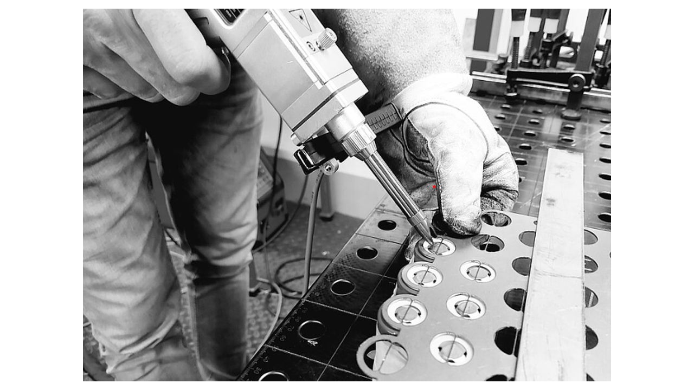
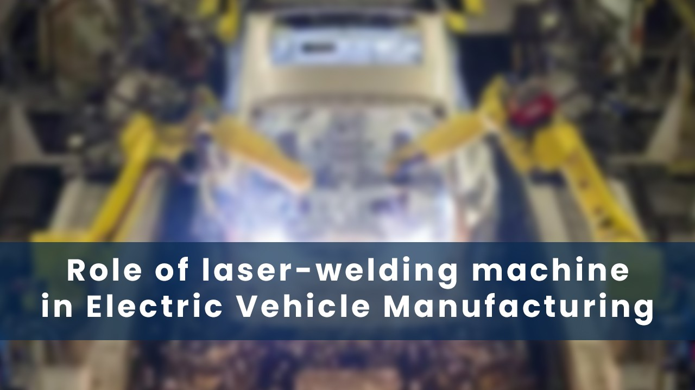
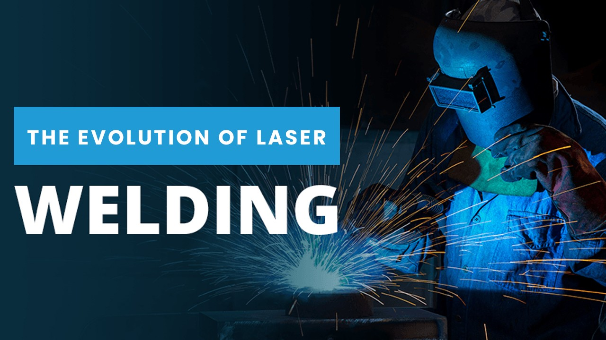
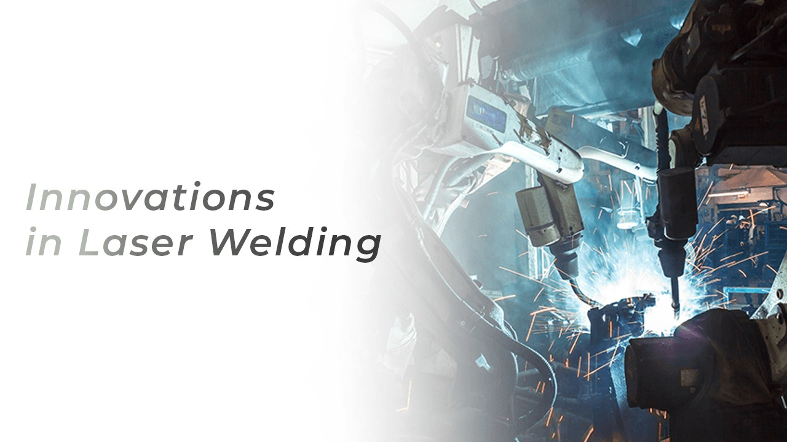
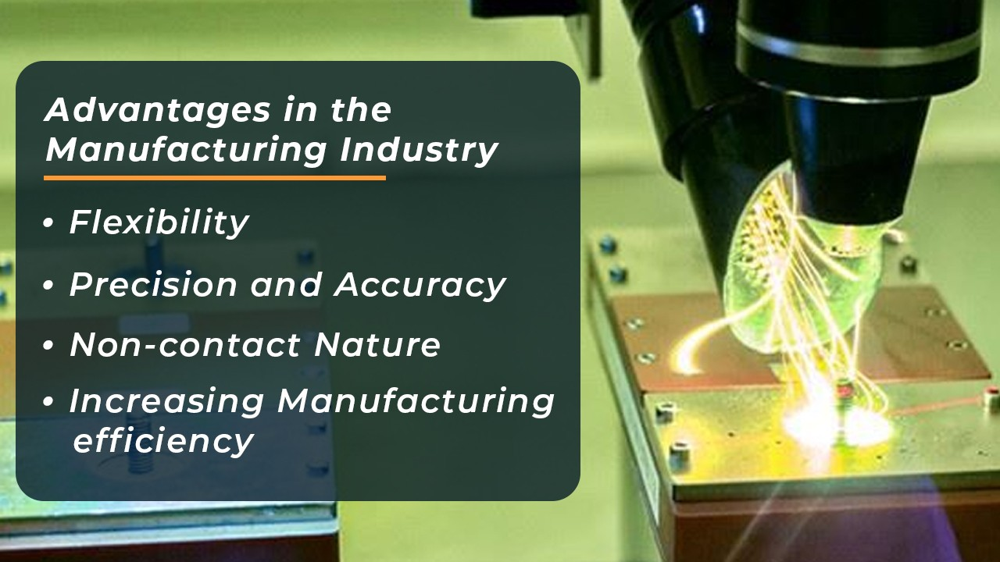
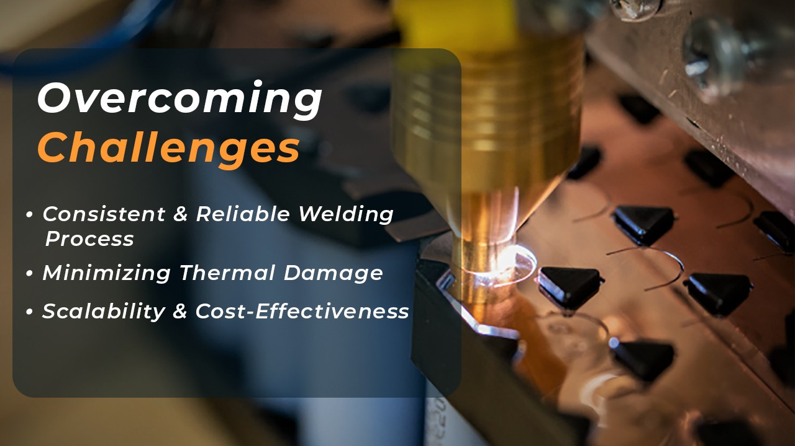
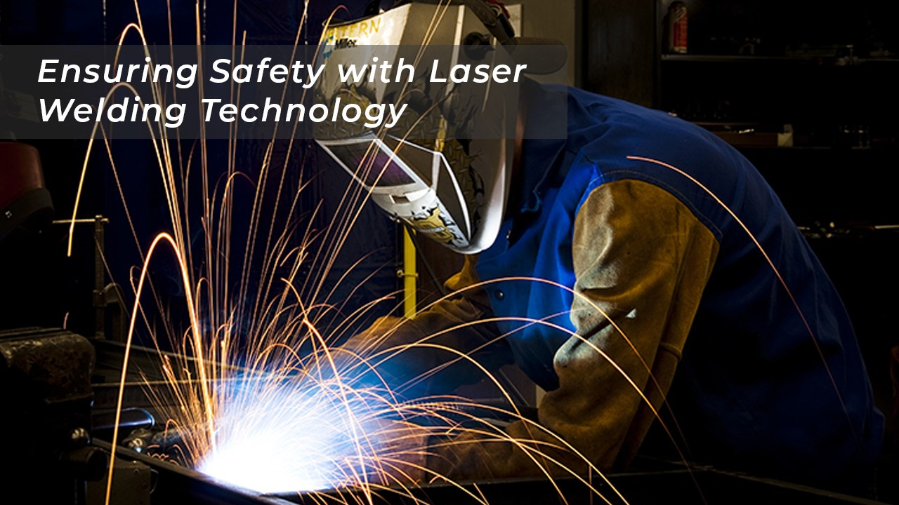
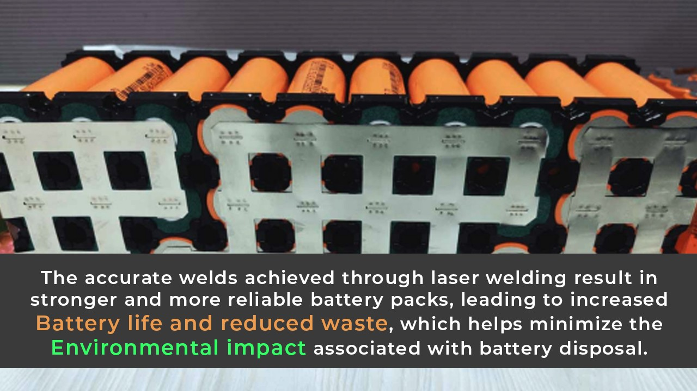
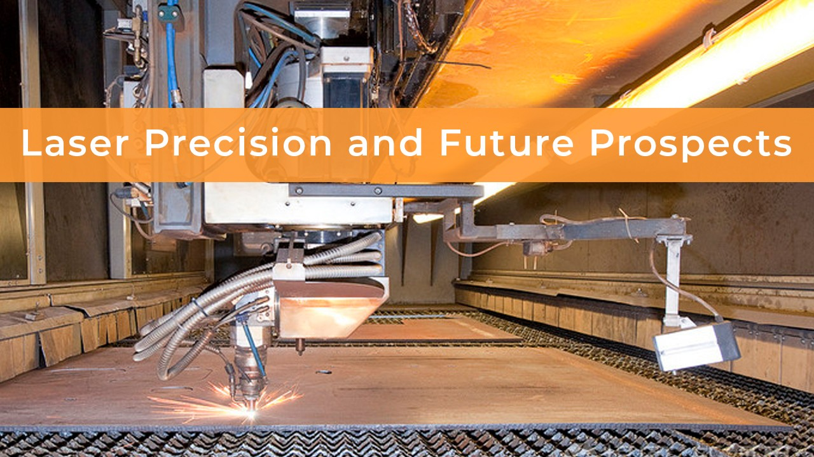

Introduction

The Lithium-ion Battery Laser Welding Machine represents a revolutionary advancement in the field of battery manufacturing. As the demand for lithium-ion batteries continues to soar in various industries, including consumer electronics, electric vehicles, and renewable energy storage, the need for efficient and precise welding techniques has become crucial. This innovative machine utilizes laser technology to weld lithium-ion battery cells with unparalleled accuracy, ensuring a strong and reliable bond between battery components. The laser welding process is non-contact, minimizing the risk of damage to sensitive battery materials and increasing production efficiency. With its ability to weld intricate and complex battery designs, the Lithium-ion Battery Laser Welding Machine is a game-changer, empowering manufacturers to meet the ever-growing demand for high-performance batteries in the rapidly evolving landscape of modern technology.
Role in Electric Vehicle Manufacturing

The Role of Lithium-ion Battery Laser Welding Machines in Electric Vehicle Manufacturing is undeniably crucial as it drives the advancement of the electric mobility revolution. With the rising global focus on sustainable transportation, electric vehicles (EVs) have gained immense popularity, making lithium-ion batteries the heart of these eco-friendly machines. The efficient and precise welding of battery components is essential to ensure the safety, performance, and longevity of EVs.
Lithium-ion Battery Laser Welding Machines play a vital role in creating high-quality and reliable battery packs by employing laser technology to weld battery cells with utmost accuracy and consistency. These machines enable the welding of intricate battery designs and ensure uniform distribution of heat, minimizing the risk of thermal damage to sensitive battery materials. By facilitating faster production cycles and reducing manufacturing costs, these advanced welding machines contribute significantly to the mass production of EVs, making them more accessible and competitive in the automotive market. As electric vehicle technology continues to evolve, the role of Lithium-ion Battery Laser Welding Machines becomes increasingly indispensable in shaping a sustainable and greener future for transportation.
The Evolution of Laser Welding

The Evolution of Lithium-ion Battery Laser Welding Machines has been a remarkable journey marked by continuous innovation and technological advancements. In the early stages of lithium-ion battery production, traditional welding methods were employed, which often led to inconsistent welds and thermal damage to sensitive battery materials. However, with the growing demand for lithium-ion batteries in various industries, including consumer electronics and electric vehicles, the need for more efficient and precise welding techniques became evident.
This led to the development of laser welding technology, which revolutionized the battery manufacturing process. Initially, early laser welding machines faced challenges in terms of speed, precision, and cost-effectiveness. But over time, with ongoing research and development, these machines evolved significantly.
Modern Lithium-ion Battery Laser Welding Machines now incorporate state-of-the-art laser sources, robotics, and advanced control systems, enabling them to weld battery cells with unparalleled accuracy, speed, and repeatability. These machines have not only improved the quality and reliability of lithium-ion batteries but also contributed to the widespread adoption of electric vehicles and the integration of renewable energy storage systems. As technology continues to evolve, we can expect further refinements and innovations in Lithium-ion Battery Laser Welding Machines, driving the growth and sustainability of battery manufacturing in the future.
Innovations in Laser Welding

Innovations in Lithium-ion Battery Laser Welding have been instrumental in shaping the landscape of battery manufacturing and supporting the rapid adoption of lithium-ion batteries in various industries. One significant innovation is the development of ultrafast laser sources that offer precise control over the welding process and reduce the heat-affected zone, minimizing thermal damage to sensitive battery materials.
Additionally, advancements in robotics and automation have led to the integration of laser welding systems into highly efficient and fully automated battery assembly lines, improving production speed and consistency. Another notable innovation is the use of beam shaping technologies, such as line beam optics, which allows for the simultaneous welding of multiple battery cells, optimizing productivity without compromising weld quality. Moreover, the implementation of intelligent control systems and machine learning algorithms has enabled real-time monitoring and adaptive welding parameters, ensuring consistent weld quality even with variations in battery designs.
These innovations not only enhance the performance and reliability of lithium-ion batteries but also contribute to the development of safer and longer-lasting battery packs for electric vehicles, consumer electronics, and renewable energy storage applications. As research and development continue, we can anticipate even more groundbreaking innovations in Lithium-ion Battery Laser Welding, further propelling the advancement of battery technology and supporting the transition to a sustainable energy future.
Advantages in the Manufacturing Industry

Lithium-ion Battery Laser Welding Machines offer a multitude of advantages in the manufacturing industry, making them a game-changer for various applications. One of the most significant advantages is the precision and accuracy they provide in welding battery components. Laser welding ensures strong and reliable bonds between battery cells, resulting in battery packs with exceptional performance and longevity.
Another key benefit is the non-contact nature of laser welding, which minimizes the risk of damage to delicate battery materials, ensuring high-quality welds and reducing material waste. Moreover, these machines enable faster production cycles, increasing manufacturing efficiency and throughput, which is especially crucial in industries with high demand for lithium-ion batteries, such as electric vehicles and portable electronics.
The flexibility of laser welding technology allows it to be adapted to various battery designs and configurations, making it suitable for both standard and custom battery packs. Additionally, laser welding machines can be integrated into automated production lines, streamlining the manufacturing process and reducing labor costs. Overall, the advantages of Lithium-ion Battery Laser Welding Machines make them indispensable tools in the manufacturing industry, driving innovation and enhancing the quality and reliability of battery products.
Overcoming Challenges

Overcoming challenges in Lithium-ion Battery Laser Welding has been essential to harness the full potential of this advanced technology in battery manufacturing. One of the main challenges is ensuring a consistent and reliable welding process, especially when dealing with varying battery designs and materials. To address this, research and development efforts have focused on refining laser parameters, optimizing beam shaping techniques, and implementing intelligent control systems that adapt to different battery configurations.
Another significant challenge lies in minimizing thermal damage to sensitive battery materials during the welding process. Innovations in ultrafast laser sources and beam delivery systems have helped reduce the heat-affected zone, ensuring the integrity of battery components. Moreover, as the demand for lithium-ion batteries continues to grow, scalability and cost-effectiveness have become critical considerations.
Manufacturers have worked on improving the throughput of laser welding systems and exploring ways to make the technology more accessible and economically viable for large-scale production. Despite the challenges, continuous advancements and innovations in Lithium-ion Battery Laser Welding are paving the way for safer, more efficient, and sustainable battery manufacturing, driving the widespread adoption of lithium-ion batteries in various industries.
Ensuring Safety with Laser Welding Technology

Ensuring the safety of a battery plant with lithium-ion battery laser welding technology is of paramount importance. Laser welding technology offers several advantages over traditional welding methods, such as precision, reduced heat-affected zones, and enhanced weld quality. To maintain safety, rigorous training and certification programs must be implemented for all personnel involved in the laser welding process.
Strict adherence to safety protocols, including the use of appropriate personal protective equipment, fire prevention measures, and emergency response plans, is vital. Additionally, regular maintenance and inspection of laser welding equipment and safety systems must be conducted to identify and address any potential hazards proactively.
A comprehensive risk assessment should be performed to identify potential safety issues throughout the plant, with particular attention to factors like ventilation, electrical systems, and handling of lithium-ion batteries. By adopting a proactive safety approach and employing cutting-edge laser welding technology, the battery plant can mitigate risks and create a safe working environment for its employees and surrounding communities.
Addressing Environmental Concerns

Lithium-ion battery laser welding plays a crucial role in addressing environmental concerns, particularly in the context of electric vehicles and renewable energy storage. By enabling the efficient and precise manufacturing of lithium-ion batteries, laser welding helps enhance the overall sustainability of these technologies. The accurate welds achieved through laser welding result in stronger and more reliable battery packs, leading to increased battery life and reduced waste, which helps minimize the environmental impact associated with battery disposal.
Additionally, the non-contact nature of laser welding reduces material waste and energy consumption during the welding process, making it a more environmentally friendly alternative to traditional welding methods. As electric vehicles and renewable energy systems become more widespread, the use of lithium-ion battery laser welding will continue to contribute to a greener and more sustainable future by supporting the growth of clean and eco-friendly technologies.
Laser Precision and Future Prospects

Lithium-ion battery laser welding precision represents a significant technological advancement that has revolutionized battery manufacturing. With the growing demand for high-performance lithium-ion batteries in various industries, achieving precise and reliable welds is paramount to ensure battery safety and efficiency. Laser welding offers unparalleled accuracy, enabling the creation of intricate battery designs with consistent quality and minimal thermal damage to sensitive battery materials. As the technology continues to evolve, future prospects for lithium-ion battery laser welding are promising. Advancements in laser sources, beam shaping, and control systems will likely further enhance welding precision and production speed, making it more accessible and cost-effective for large-scale battery manufacturing. Moreover, continued research in materials science and battery engineering may lead to the development of novel battery designs that are optimized for laser welding, further improving battery performance and energy density. As we push the boundaries of lithium-ion battery laser welding precision, we can expect to see its widespread adoption, supporting the growth of electric vehicles, renewable energy storage, and various other industries that rely on efficient and high-quality lithium-ion batteries.
Semco Laser Welding Machine

Semco Laser welding machine is a cutting-edge machine that comes in various ranges, including SEMCO SI LW 1000/1500/2000/3000/4000/6000W. The machine uses laser technology to perform welding tasks, providing high precision and speed. The machine comes with a conveyor system that enables continuous and automated welding operations, enhancing productivity. The machine also has an alarm function and automatic inspection, ensuring safety and high-quality welding. The automatic inspection function enables the machine to detect and correct errors during the welding process, minimizing defects in the final product. Overall, the Semco Laser welding machine is a reliable and efficient machine that is ideal for various industrial applications that require high precision and speed.
Got the solution to your welding worries then what are you waiting for book a live demo and operate your battery plant without any hassles and tensions. If you liked our newsletter then do not forget to share and comment and stay tuned for our next Newsletter on “Laser Marking”. Till then “Happy Batteries”.